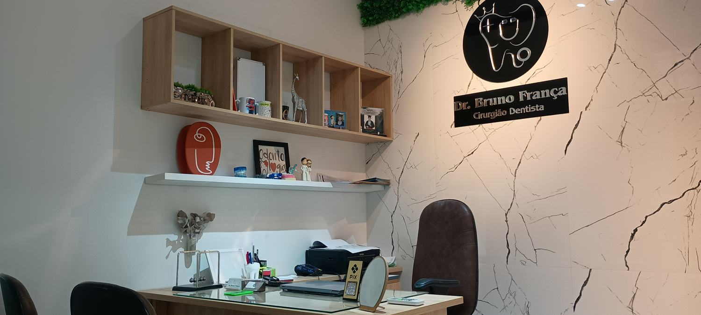
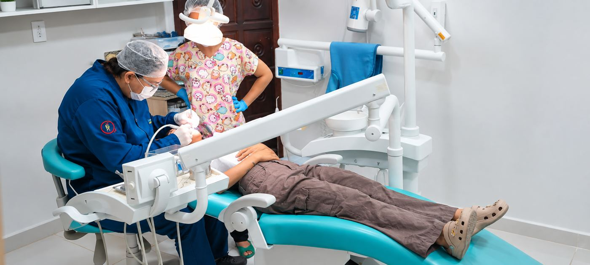
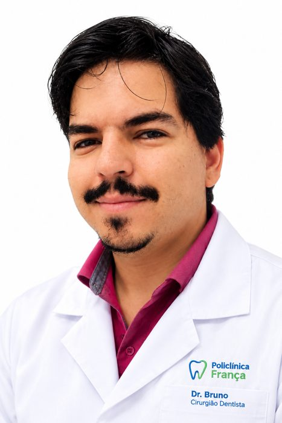
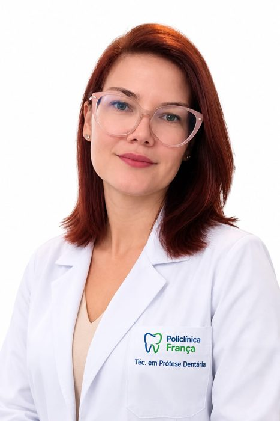
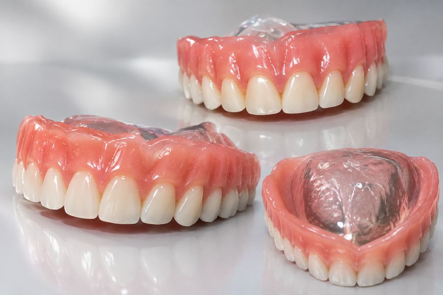

Odontologia
Policlínica França
Sobre
Sobre a Policlínica França
A Policlínica França está localizada na Rua José Resende de França, nº 25, no Centro de Pesqueira – PE.
A clínica possui avaliação de 5,0 estrelas no Google, com 13 avaliações, nas quais pacientes destacam o atendimento, o profissionalismo e a experiência positiva.
Nossa história
Um sonho que atravessou gerações
Foi em 31 de outubro de 2017 que um sonho ganhou forma e se transformou na Policlínica França: o sonho de construir uma clínica voltada para diferentes especialidades, com o propósito de oferecer aos pacientes um atendimento cada vez mais completo e de qualidade.
Desde o início, existe um compromisso que permanece presente em cada detalhe: buscar sempre o melhor para o paciente. Essa busca está presente na escolha dos materiais, na utilização de equipamentos, na adoção de novas técnicas e na constante procura por evolução. Porque cuidar também significa estar disposto a melhorar todos os dias.
A história por trás do nome
O nome França carrega uma história que começou muito antes da criação da Policlínica. O bisavô da família era da França e veio para o Brasil no período anterior à Segunda Guerra Mundial. Por ser francês e falar francês, passou a ser chamado de "França" pelas pessoas da época.
Com o passar das gerações, esse nome tornou-se sobrenome e passou a fazer parte da história da família — uma história própria, que não possui relação com os França de Pesqueira, mas que representa as raízes e a trajetória da família que hoje dá nome à Policlínica.
De uma história familiar para um propósito
Hoje, Policlínica França representa a união de duas histórias: a história de uma família e a história de um sonho. Um nome que veio de longe, um sonho que começou em 2017, e um propósito que continua o mesmo: buscar sempre o melhor para quem confia seus cuidados a nós.

Cuidando do seu sorriso, da sua saúde e do seu bem-estar.
Aqui na Policlínica França, você encontra atendimento humanizado, tecnologia e profissionais qualificados para cuidar do que mais importa: você.
Especialistas
Nossa equipe
Profissionais da Policlínica França.

Bruno José França dos Santos é cirurgião-dentista da Policlínica França. Natural de Pesqueira – PE, aos 39 anos alia formação acadêmica sólida a uma busca constante por atualização técnica em diferentes áreas da Odontologia.
Formação acadêmica
- Bacharelado em Odontologia
- Licenciatura plena em Letras, com habilitação em Espanhol
- Licenciatura plena em Pedagogia, com habilitação em Espanhol
Aperfeiçoamento profissional
- Pós-graduado em Ortodontia
- Cursos de aperfeiçoamento em Dentística, Endodontia e Prótese, entre outras áreas
- Atualmente cursando pós-graduação em Implantodontia, Prótese e Periodontia

Wilma Carla Araújo de França integra a equipe técnica da Policlínica França, com 38 anos e sólida experiência na área de prótese dentária, atuando com dedicação à precisão técnica e à qualidade dos trabalhos realizados.
Formação técnica
- Assistente em Saúde Bucal
- Técnica em Radiologia
- Técnica em Prótese Dentária
Atuação e especialização
- Cursos de aperfeiçoamento em cerâmica dental, prótese fixa e removível
- Proprietária do Laboratório de Prótese França

Atendimento
Atendimento
Atendimento odontológico no Centro de Pesqueira, com atendimento até 21h.
Para confirmar o atendimento, entre em contato pelo WhatsApp.
Procedimentos
Procedimentos
Confira abaixo os procedimentos realizados na Policlínica França, organizados por área. Para saber sobre disponibilidade e valores, fale pelo WhatsApp.
- Profilaxia (limpeza dental)
- Raspagem de tártaro
- Remoção de placa bacteriana
- Aplicação de flúor
- Orientação de higiene bucal
- Avaliação e prevenção de cáries
- Selantes dentários
- Restauração dental (obturação)
- Restaurações em resina composta
- Restaurações estéticas
- Reconstrução de dentes fraturados
- Recontorno estético dental
- Clareamento dental (caseiro, de consultório ou interno)
- Tratamento de canal
- Retratamento de canal
- Tratamento de dentes com infecção
- Pino intrarradicular
- Núcleo de preenchimento/reconstrução
- Exodontia (extração de dente)
- Extração de dentes decíduos (de leite)
- Extração de dentes inclusos ou impactados
- Extração de siso
- Cirurgia de terceiros molares
- Remoção de raízes residuais
- Frenectomia
- Biópsia de lesões bucais
- Cirurgias pré-protéticas
- Raspagem periodontal
- Tratamento de gengivite
- Tratamento de periodontite
- Alisamento radicular
- Gengivoplastia
- Gengivectomia
- Aumento de coroa clínica
- Cirurgias periodontais
- Tratamento de retração gengival
- Implante dentário unitário ou múltiplo
- Implantes para prótese protocolo
- Prótese e coroa sobre implante
- Enxerto ósseo
- Regeneração óssea guiada
- Levantamento de seio maxilar
- Enxerto gengival
- Reabilitação oral sobre implantes
- Manutenção de implantes e próteses
- Coroa em porcelana/cerâmica, zircônia ou metalocerâmica
- Coroa provisória em acrílico
- Prótese fixa
- Prótese parcial removível (PPR)
- Prótese total (dentadura)
- Prótese provisória
- Overdenture
- Pinos e núcleos protéticos
- Lentes de contato dental em cerâmica ou resina
- Facetas em cerâmica ou resina composta
- Reanatomização dental
- Fechamento de diastemas
- Harmonização do sorriso
- Contorno estético dos dentes
- Mock-up odontológico
- Avaliação ortodôntica
- Aparelho fixo metálico
- Aparelho estético
- Aparelho autoligado
- Aparelho móvel
- Alinhadores transparentes
- Contenção ortodôntica
- Manutenção ortodôntica
- Ortodontia preventiva e interceptativa
- Atendimento odontológico infantil
- Restaurações em dentes de leite
- Tratamento de canal em dentes de leite
- Manutenção de espaço
- Avaliação de bruxismo
- Placa para bruxismo / miorrelaxante
- Avaliação da articulação temporomandibular (ATM)
- Tratamento das disfunções temporomandibulares (DTM)
- Ajuste oclusal
- Tratamento de dores musculares relacionadas à mastigação
- Atendimento para dor de dente
- Atendimento para abscesso dentário
- Tratamento de infecções odontogênicas
- Drenagem de abscesso
- Tratamento de dentes fraturados
- Curativos odontológicos
- Atendimento para trauma dental
- Controle de sangramento pós-operatório
- Tratamento de urgências endodônticas
Avaliações
Experiências de nossos pacientes
“Ótima clínica, excelentes profissionais, já sou paciente há muitos anos. ❤️”
— Geovana Ferreira
“A Secretaria é uma excelente profissional, maravilhosa no atendimento e na prática, indico a todos essa profissional”
— Kleiton Betãnio
“Ótimo atendimento indico demais 💙💙💙”
— Eloísa Silva
Localização
Estamos no Centro de Pesqueira
R. José Resende de França, nº 25
Centro – Pesqueira – PE
CEP 55200-000
Acompanhe no Instagram
Siga a Policlínica França no perfil oficial da clínica: @policlinica_franca
Contato
Entre em contato
Telefone: (87) 9133-4512
WhatsApp: +55 (87) 9133-4512
Atendimento até 21h. Para confirmar o atendimento, entre em contato pelo WhatsApp.
Solicitar agendamento
Preencha e enviaremos sua mensagem pelo WhatsApp. A confirmação do horário é feita pela recepção.